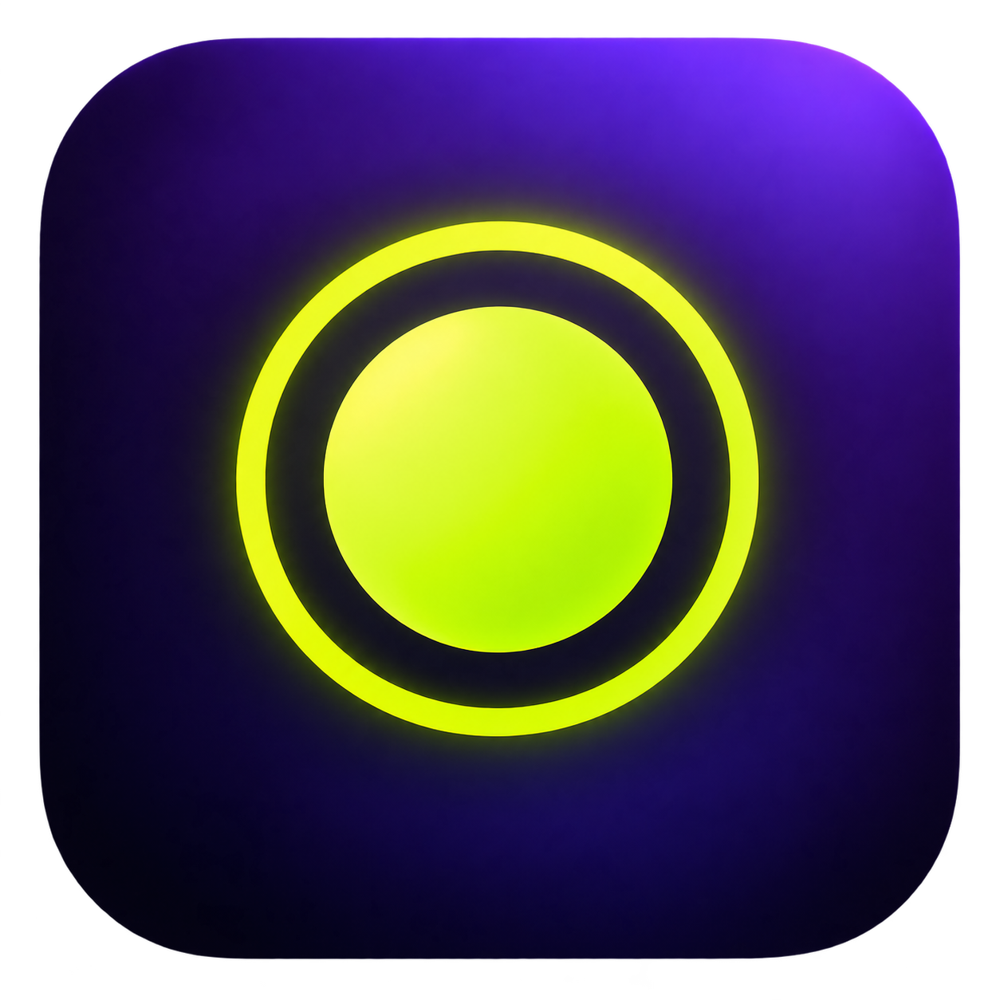

Recly 录屏主控台
全屏录制
窗口录制
选定区域
录制目标：
主显示器 (1920×1080)
麦克风
就绪
系统默认麦克风
摄像头
关闭
画中画人像（右键更换）
扬声器声音
录制系统内部声音
录制时隐藏桌面图标
结束、取消或出错后恢复原状态
正在读取存储路径…
更改
打开
开始录制
00:00
正在录制 · 屏幕
录制主控台不会被录入画面
标记
提词器
放弃
结束录制
正在整理素材…
结束前请不要关闭 Recly
录制完成：未命名项目
正在生成自动缩放轨迹…
进入剪辑编辑
打开文件夹
返回主控台
⚙️ 全局快捷键设置
×
开始 / 停止录制
暂停 / 恢复录制
添加剪辑标记
放弃录制